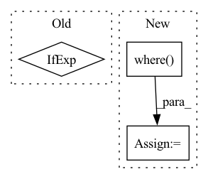

Pattern ID :3618
Before Change
nstep_len = torch.zeros(batch_size, device=self.device, dtype=int_tens_type, requires_grad=False)
nstep_max_len = torch.max(nstep_len)
nstep_one_hot = torch.zeros(len(nstep_len), nstep_max_len + 1, device=self.device, requires_grad=False).scatter_(1, nstep_len.unsqueeze(1), 1.)
terminals = terminals if self.act_buf_size == 1 else terminals * 0.0 // the way the replay memory works, RTAC will never encounter terminal states for buffers of more than 1 action
// print_debug(f"nstep_len: {nstep_len}")
// print_debug(f"nstep_max_len: {nstep_max_len}")
// print_debug(f"nstep_one_hot: {nstep_one_hot}")After Change
// print_debug(f"nstep_one_hot: {nstep_one_hot}")
// we compute the terminals tensor here
terminals = torch.where( (done_traj[nstep_len + 1]), ones_tens, zeros_tens)
print_debug(f"terminals: {terminals}")
print("DEBUG EXIT")
exit()In pattern: SUPERPATTERN
Frequency: 3
Non-data size: 3
Instances Fragment ID: 13657508
Project Name: trackmania-rl/tmrl
Commit Name: 353950133dc8f354d9d64909791a050df1fee02c
Time: 2020-11-30
Author: yann.bouteiller@hotmail.fr
File Name: agents-rt/agents/drtac.py
M Class Name: Agent
N Class Name: Agent
M Method Name: train(1)
N Method Name: train(1)
M Parent Class: agents.sac.Agent
N Parent Class: agents.sac.Agent
M File Name: agents-rt/agents/drtac.py
N File Name: agents-rt/agents/drtac.py
M Start Line: 71
M End Line: 114
N Start Line: 94
N End Line: 155
Before Change
while not accepted:
// check if the current step exceeds the target
t1_achieved = t0 + h > t1
hstep = t1 - t0 if t1_achieved else h
tnew = t0 + hstep
// perform the RK-step to t0+h
After Change
while not accepted:
// check if the current step exceeds the target
t1_achieved = t0 + h > t1 // (...,)
hstep = torch.where( t1_achieved, t1 - t0, h) // (...,)
tnew = t0 + hstep
// perform the RK-step to t0+h
abck = (self.A, self.B, self.C, self.K)
ynew, fnew = rk_step(self.func, t0, y0, f0, hstep, abck)
// estimate the error norm
scale = self.atol + torch.maximum(y0.norm(dim=self.ydims), ynew.norm(dim=self.ydims)) * self.rtol
errnorm = self._error_norm(self.K, hstep) / scale // (...,)
accepted = bool(torch.all(errnorm < 1).cpu().detach().item())
// adjust the step size
new_factor = self.step_mult * (errnorm + 1e-8) ** self.error_exponent
// if accepted and not t1_achieved:
if accepted:
factor = torch.minimum(torch.full_like(new_factor, self.max_factor), new_factor)
Fragment ID: 13657513
Project Name: xitorch/xitorch
Commit Name: c6f0785664d60d1310778d43f14a3464660ea4d9
Time: 2021-12-30
Author: firman.kasim@gmail.com
File Name: xitorch/_impls/integrate/ivp/adaptive_rk.py
M Class Name: RKAdaptiveStepSolver
N Class Name: RKAdaptiveStepSolver
M Method Name: _single_step(3)
N Method Name: _single_step(3)
M Parent Class: object
N Parent Class: object
M File Name: xitorch/_impls/integrate/ivp/adaptive_rk.py
N File Name: xitorch/_impls/integrate/ivp/adaptive_rk.py
M Start Line: 85
M End Line: 122
N Start Line: 125
N End Line: 165
Before Change
cond_prob_drop = 0.
):
batch_size, device = image_embed.shape[0], image_embed.device
t = self.time_mlp(time) if exists(self.time_mlp) else None
cond_prob_mask = prob_mask_like(batch_size, cond_prob_drop, device = device)
After Change
// mask out image embedding depending on condition dropout
// for classifier free guidance
image_embed = torch.where(
rearrange(cond_prob_mask, "b -> b 1"),
image_embed,
rearrange(self.null_image_embed, "d -> 1 d")
)
cond = torch.cat((t, image_embed), dim = -1)
hiddens = [] Fragment ID: 13657515
Project Name: lucidrains/dalle2-pytorch
Commit Name: 25d980ebbf1e22ce8396cdec400e22e83f754176
Time: 2022-04-12
Author: lucidrains@gmail.com
File Name: dalle2_pytorch/dalle2_pytorch.py
M Class Name: Unet
N Class Name: Unet
M Method Name: forward(2)
N Method Name: forward(2)
M Parent Class: nn.Module
N Parent Class: nn.Module
M File Name: dalle2_pytorch/dalle2_pytorch.py
N File Name: dalle2_pytorch/dalle2_pytorch.py
M Start Line: 411
M End Line: 414
N Start Line: 412
N End Line: 425